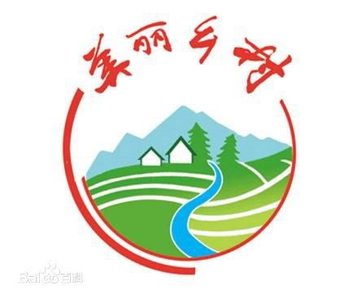
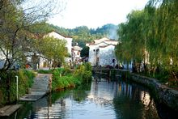
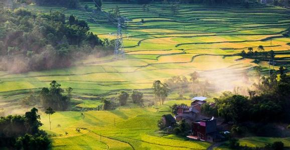
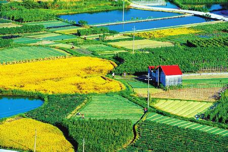
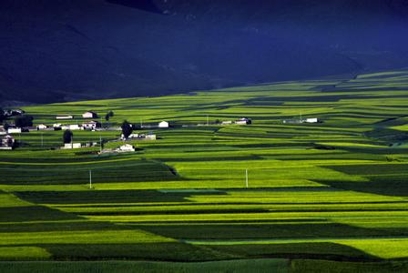

美丽乡村
美丽乡村，是指中国共产党第十六届五中全会提出的建设社会主义新农村的重大历史任务时提出的“生产发展、生活宽裕、乡风文明、村容整洁、管理民主”等具体要求。
- 中文名 美丽乡村
- 外文名 The beautiful countryside
- 提出者 共产党
- 提出时间 十六届五中全会
基本信息
提出者 共产党
中文名 美丽乡村提出时间 十六届五中全会
外文名 The beautiful countryside总书记指示
2013年7月22日，习近平来到进行城乡一体化试点的鄂州市长港镇峒山村。他说，实现城乡一体化，建设美丽乡村，是要给乡亲们造福，不要把钱花在不必要的事情上，比如说“涂脂抹粉”，房子外面刷层白灰，一白遮百丑。不能大拆大建，特别是古村落要保护好。
习近平说，即使将来城镇化达到70%以上，还有四五亿人在农村。农村绝不能成为荒芜的农村、 留守的农村、记忆中的故园。城镇化要发展， 农业现代化和新农村建设也要发展，同步发展才能相得益彰，要推进城乡一体化发展。
内容
（一）2005年10月，党的十六届五中全会提出建设社会主义新农村的重大历史任务，提出了“生产发展、生活宽裕、乡风文明、村容整洁、管理民主”的具体要求。
（二）2007年10月，党的十七大顺利召开，会议提出“要统筹城乡发展,推进社会主义新农村建设”。
（三 ）“十一五”期间，全国很多省市按十六届五中全会的要求，为加快社会主义新农村建设，努力实现生产发展、生活富裕、生态良好的目标，纷纷制定美丽乡村建设行动计划并付之行动，并取得了一定的成效。
（四）2008年，浙江省安吉县正式提出“中国美丽乡村”计划，出台《建设“中国美丽乡村”行动纲要》，提出10年左右时间，把安吉县打造成为中国最美丽乡村。
安吉县美丽乡村建设不但改善了农村的生态与景观，还打造出一批知名的农产品品牌，带动农村生态旅游的发展，带动农民收入增加，为中国社会主义新农村建设探索出一条创新的发展道路。

婺源李坑
2009年，北京大学中国地方政府研究院院长彭真怀、国务院研究室副主任李炳坤率中国美丽乡村建设与经济发展调研组调研后认为,再用5年时间,一个山美水美环境美、吃美住美生活美、穿美话美心灵美的中国最美丽乡村就会出现。
中央农村工作办公室主任陈锡文在考察安吉后说:安吉进行的中国美丽乡村建设是中国新农村建设的鲜活样本。尽管安吉的“中国美丽乡村”建设不足四年时间,但已在全国引起强烈反响，成为全国关注的焦点。
（五）“十二五”期间，受安吉县“中国美丽乡村”建设的成功影响，浙江省制定了《浙江省美丽乡村建设行动计划》，广东省增城、花都、从化等市县从2011年开始也启动美丽乡村建设，2012年海南省也明确提出将以推进“美丽乡村”工程为抓手，加快推进全省农村危房改造建设和新农村建设的步伐。“美丽乡村”建设已成为中国社会主义新农村建设的代名词，全国各地正在掀起美丽乡村建设的新热潮。
（六）作为“国际旅游岛”，海南最大的优势就是生态、环境与绿色优势。这些优势为海南美丽乡村建设创造了得天独厚的条件，美丽乡村建设符合海南需要，对推进海南生态文明建设、推进国际旅游岛建设有重要意义。保亭县什进村、白沙县罗帅村等美丽乡村建设项目的实施，为海南省美丽乡村建设探索了一条可供选择的道路。
（七）2012年（第13届）海南岛欢乐节将于年底在屯昌县举办，正值天时地利。国家旅游局、海南省人民政府（中国海南岛欢乐节组委会）将举办“中国（海南）美丽乡村建设论坛与投资洽谈会”。
美丽乡村县镇
浙江安吉
天津大寺镇王村
江西婺源
浙江西塘
苏州周庄
兰溪诸葛村
湘西凤凰
福建培田古村
浙江乌镇
江苏光福古镇
苏州木渎古镇
云南和顺古镇
浙江前童古镇
苏州同里
安徽宏村
美丽乡村建设
浙江在线01月15日讯 13日，湖州安吉县在县委十二届三次全体(扩大)会议上，正式提出“中国美丽乡村”计划：即用10年左右时间，把安吉县打造成为中国最美丽的乡村，使之成为继“中国竹乡”、首个“全国生态县”之后的第三张国家级名片。
婺源李坑
按照这一计划，安吉县将建设“村村优美、家家创业、处处和谐、人人幸福”的新农村，打造全国生态环境最优美、村容村貌最整洁、产业特色最鲜明、社区服务最健全、乡土文化最繁荣、农民生活最幸福的地区之一；实施“环境提升”、“产业提升”、“素质提升”、“服务提升”四大工程。
据介绍，安吉县已拟定前期(2008年—2009年)、中期(2010年—2012年)、远期(2013年—2017年)的工作目标。
在2008年至2009年：重点完成递铺—皈山—孝丰—报福—章村、递铺—山川—天荒坪—上墅示范带和环灵峰山休闲产业带的建设，以及配套的示范带连接工程的建设，总体完成50个左右的美丽乡村创建，初步打响安吉“中国美丽乡村”品牌。
2010年至2012年：完成杭垓、高禹—良朋—鄣吴沿线和溪龙—梅溪—昆铜沿线建设，以及配套的连接工程的建设，总体完成70个左右的美丽乡村创建，基本完成“中国美丽乡村”的建设目标。
2013年至2017年：全面完成全县剩余村的创建和配套连接工程的建设，最终实现安吉全县“美丽乡村”建设目标。
美丽乡村十大模式
国家农业部于2013年启动了“美丽乡村”创建活动，于2014年2月正式对外发布美丽乡村建设十大模式，为全国的美丽乡村建设提供范本和借鉴。
具体而言这十大模式分别为：产业发展型、生态保护型、城郊集约型、社会综治型、文化传承型、渔业开发型、草原牧场型、环境整治型、休闲旅游型、高效农业型。
1.产业发展型模式
主要在东部沿海等经济相对发达地区，其特点是产业优势和特色明显，农民专业合作社、龙头企业发展基础好，产业化水平高，初步形成“一村一品”、“一乡一业”，实现了农业生产聚集、农业规模经营，农业产业链条不断延伸，产业带动效果明显。
典型：江苏省张家港市南丰镇永联村。
2.生态保护型模式
主要是在生态优美、环境污染少的地区，其特点是自然条件优越，水资源和森林资源丰富，具有传统的田园风光和乡村特色，生态环境优势明显，把生态环境优势变为经济优势的潜力大，适宜发展生态旅游。
典型：浙江省安吉县山川乡高家堂村。
3.城郊集约型模式
主要是在大中城市郊区，其特点是经济条件较好，公共设施和基础设施较为完善，交通便捷，农业集约化、规模化经营水平高，土地产出率高，农民收入水平相对较高，是大中城市重要的“菜篮子”基地。
典型：上海市松江区泖港镇。
4.社会综治型模式
主要在人数较多，规模较大，居住较集中的村镇，其特点是区位条件好，经济基础强，带动作用大，基础设施相对完善。
典型：吉林省松原市扶余市弓棚子镇广发村。
5.文化传承型模式
是在具有特殊人文景观，包括古村落、古建筑、古民居以及传统文化的地区，其特点是乡村文化资源丰富，具有优秀民俗文化以及非物质文化，文化展示和传承的潜力大。
典型：河南省洛阳市孟津县平乐镇平乐村。
6.渔业开发型模式
主要在沿海和水网地区的传统渔区，其特点是产业以渔业为主，通过发展渔业促进就业，增加渔民收入，繁荣农村经济，渔业在农业产业中占主导地位。
典型：广东省广州市南沙区横沥镇冯马三村。
7.草原牧场型模式
主要在我国牧区半牧区县(旗、市)，占全国国土面积的40%以上。其特点是草原畜牧业是牧区经济发展的基础产业，是牧民收入的主要来源。
典型：内蒙古锡林郭勒盟西乌珠穆沁旗浩勒图高勒镇脑干宝力格嘎查。
8.环境整治型模式
主要在农村脏乱差问题突出的地区，其特点是农村环境基础设施建设滞后，环境污染问题，当地农民群众对环境整治的呼声高、反应强烈。
典型：广西壮族自治区恭城瑶族自治县莲花镇红岩村。
9.休闲旅游型模式
休闲旅游型美丽乡村模式主要是在适宜发展乡村旅游的地区，其特点是旅游资源丰富，住宿、餐饮、休闲娱乐设施完善齐备，交通便捷，距离城市较近，适合休闲度假，发展乡村旅游潜力大。
典型：江西省婺源县江湾镇。
10.高效农业型模式
主要在我国的农业主产区，其特点是以发展农业作物生产为主，农田水利等农业基础设施相对完善，农产品商品化率和农业机械化水平高，人均耕地资源丰富，农作物秸秆产量大。
典型：福建省漳州市平和县三坪村。
美丽乡村建设计划
海南省美丽乡村建设五年行动计划（2016-2020
青岛市美丽乡村标准化建设行动计划（2016—2020）
2014年中国最美休闲乡村和中国美丽田园
2014年中国最美休闲乡村
特色民居村(10个)
北京市密云县干峪沟村
河北省辛集市双柳树村
山西省平顺县白杨坡村
内蒙古自治区乌兰浩特市胡力斯台嘎查
辽宁省海城市三家堡村
吉林省吉林市昌邑区大荒地村
黑龙江省绥滨县中兴村
黑龙江省五常市新庄村
浙江省仙居县高迁村
安徽省宁国市千秋畲族村
特色民俗村(10个)
北京市门头沟区洪水口村
北京市平谷区张家台村
浙江省庆元县月山村
江西省婺源县篁岭民俗文化村
湖北省英山县乌云山村
湖南省石门县长梯隘村
云南省弥勒县可邑村
陕西省平利县龙头村
青海省海东市乐都区新联村
新疆维吾尔自治区岳普湖县玛什英恩孜村
美丽乡村建设技术创新联盟
2014年12月12——14日，由农业部美丽乡村创建办公室、农业部环境保护科研监测所、中国农业大学、中国建筑设计院联合主办的美丽乡村环境保护与治理研讨会在天津召开，会议宣布成立“美丽乡村建设技术创新联盟”。
科技是美丽乡村的重要支撑，如何发挥科技在创建过程中的推动作用是农业部一直在着力研究的重要问题。而要解决这个问题，就需要注重政府决策、部门分工、学科结合、企业参与之间的协同，重视亿万农民群众的主体地位和他们的实际生产需求。本次会议成立了以农业部环境保护科研监测所为牵头单位，中国农科院、中科院等22个单位为理事的“美丽乡村建设技术创新联盟”，是一次很好尝试，联盟将为美丽乡村建设提供重要智力支持。
来自全国各地的科研院所、高等院校近50个单位的120多位专家学者参加了会议。农业部环境保护科研监测所任天志所长致词，农业部美丽乡村创建办公室魏玉栋主任作了主旨引导报告，介绍了全国美丽乡村创建的有关情况。西南林业大学副校长郑毅等10多位专家分别作了精彩的学术报告，给与会代表奉献了一场学术盛宴。与会代表对联盟章程进行了深入讨论，最终通过了《美丽乡村建设技术创新联盟章程》。
中国美丽乡村研究中心
中国美丽乡村研究中心是农业部有关方面与四川大学共建的，以“美丽乡村”、三农问题为研究对象的全国性、跨学科、跨地域、跨领域的开放型综合研究平台，是各方协同合作的新型国家智库。
中心主要从事美丽乡村基础理论、政策制度、规划设计、建设模式、传播推广等方面研究，为各有关方面提供“美丽乡村”建设的政策建议、决策咨询、人才培养、技术支撑、形象传播等服务。
一、科研方向
1、美丽乡村基础理论研究。研究美丽乡村内涵、农业生态文明融入路径、现代农业发展体系、产村融合路径、农耕文化保护和传承、国内外美丽乡村建设经验、美丽乡村建设模式等问题；
2、美丽乡村建设水平评价研究。围绕美丽乡村评价进行评价体系研究、现状问题研究、决策咨询研究；
3、美丽乡村规划设计研究。研究美丽乡村省域、市域、县域总体规划编制，以及美丽乡村村庄建设规划、美丽乡村文化旅游发展规划、美丽乡村产业发展规划等专项规划编制问题。
4、美丽乡村政策制度研究。研究美丽乡村的土地流转制度、环境综合治理机制体制、新型职业农民培训制度等；
5、美丽乡村传播推广研究。搭建美丽乡村传播体系，研究美丽乡村传播与地区形象构建问题。
二、机构及人员
中心由综合部、社会调研部、农业科技部、规划策划部、媒体工作部等组成，各部由主任、副主任、成员若干名组成。
中心主任为农业部美丽乡村创建办公室主任魏玉栋，四川大学“美丽中国”研究所所长、博士生导师蔡尚伟教授。副主任为四川大学生命科学学院副院长，博士生导师王红宁教授；秘书长为四川大学“美丽中国”研究所执行所长、博士生导师程励教授。原东京大学教授小初治担任中心顾问。同时，中心长期聘任来自国内外的一流专家担任中心顾问、研究员，参与相关工作。
三、主要工作
1、广泛的国际交流与合作。中心与韩国、日本、英国等国家的一流高校建立了广泛的交流合作关系。长期邀请这些国家的城乡建设专家到中国访问、座谈，提供他们国家美丽乡村建设的相关经验。
2、与各级政府积极展开合作。自成立以来，中心受国家相关部委，以及各地政府的委托承担了多项美丽乡村建设有关课题，为地区美丽乡村建设提供了诸多政策建议。
3、编制中国美丽乡村发展报告。中心团队每年深入研究各地美丽乡村建设情况，分析中国美丽乡村建设存在的问题与挑战，构建美丽乡村建设路径，编制中国美丽乡村发展报告。
4、举办国际化、全国性高端论坛。中心长期联合社会有关力量，举办中国美丽乡村论坛、世界美丽乡村论坛等系列论坛，研讨美丽乡村建设有关问题。2016年，中心与农业部科教司、四川省委农工委等国家有关部委和地方党委政府合作，共同举办了首届中国美丽乡村论坛。
5、开展美丽乡村人才培训。中心依托强大的师资力量，整合全国乡村建设领域一流专家，长期为各级政府、涉农企业提供人才培训服务。
6、开展系列美丽乡村评选活动。推出美丽乡村征文大赛、美丽乡村摄影大赛、美丽乡村视频大赛等系列评选活动，助力美丽乡村传播。
美丽乡村论坛
首届中国美丽乡村论坛简介
首届中国美丽乡村论坛是由国家农业部科教司、四川省委农工委、农业部美丽乡村创建办公室、中国美丽乡村研究中心（四川大学）等共同举办，中央电视台农业频道、中国电信四川公司等协办的美丽乡村高端论坛。
论坛于2015年11月19日-20日在成都召开，农业部等部委的有关领导，中国社会科学院、中国农业大学、四川大学、东京大学、剑桥大学等院校的专家学者，来自浙江、北京、云南、广东、湖南、河北、广西、陕西、甘肃、江苏、贵州、宁夏、黑龙江、台湾等全国各地的美丽乡村建设者们以及部分驻华领事机构和涉农企业代表齐聚一堂，研讨“面向2020年的美丽乡村建设”。
本届论坛创造了多个第一：论坛是中国首个大型美丽乡村主题综合性论坛，通过了中国首份美丽乡村建设宣言，签署了第一份部省共建美丽乡村的框架协议，讨论了首个《中国美丽乡村发展报告》。
更多图册
词条图册



词条标签：地理 ， 地点